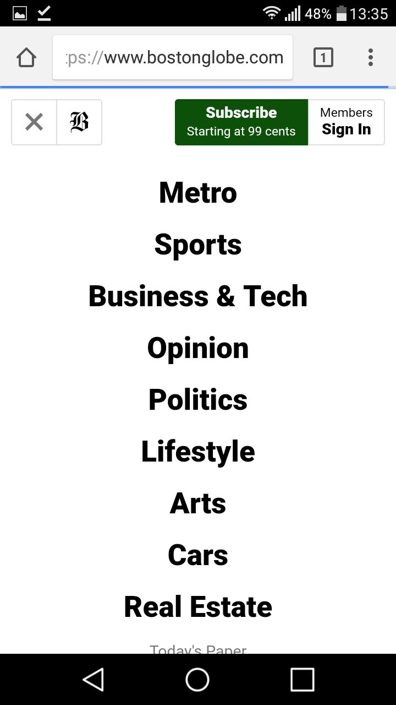

1):What is the purpose of the RWD? Why it is used? How things are done before RWD? What is the difference?
answer: Purpose of RWD is making width and height of website according to the size of screen, fix the screen resolutions, user preferences and user installed fonts. In simple words, making website responsive in all platforms.
By 2008 number of related terms like flexible, liquid, fluid, elastic were being used to describe outlets. And In 2010 ETHAN marcotte coined the term responsive web design and defined fluid grid/ flexible image/ media queries etcs.
2)How CSS media queries can help you building responsive websites?
answer:As w3c created media queries as part of the css3 specification, improving upon the promise of media types. It allows to target certain device class as well as actually inspect the physical characteristics of the device rendering. The query contain two types:
3):Why to use em(font) based sizing for examples margins?
In css, the em is a general unit of length related directly to font size. The fundamental advantage of using ems is that distances, lengths and spaces will all scale proportionately with the text sizes. When setting font-size in ems, we do so relative to the inherited font-size, that is to say font size of the element’s parent.
4)Article is already 7 years old, do we have any new technology which can be used to achieve same type of UI responsiveness as described in the article. Buzz words: (CSS Grid, Flexbox)
answer: yes, we have flexbox model and grid layouts.
these are the pics taken from laptop and mobile phone to show the responsiveness of websites.
